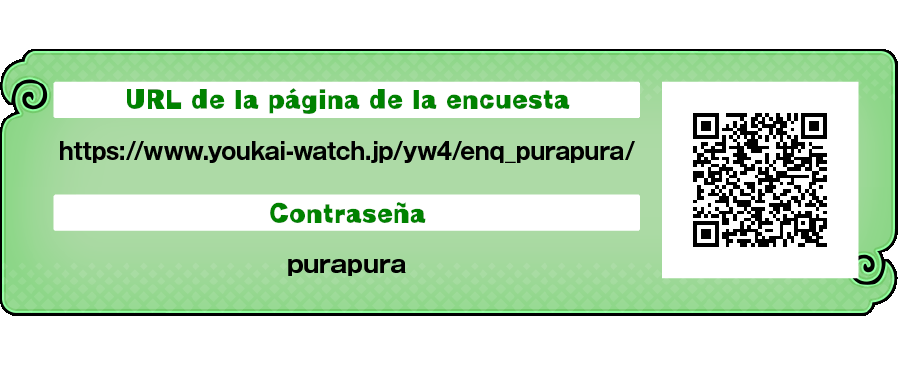

Solicitud de colaboración con la encuesta
[ ! ] Aviso importante
Esta encuesta está prevista para realizarse durante dos meses a partir de la fecha de lanzamiento o del inicio de la distribución del software. Dependiendo del momento en que consulte esta página, es posible que el período de participación ya haya terminado. Gracias por su comprensión. Para obtener más información, consulte la URL de la página de la encuesta que aparece a continuación.
Estamos realizando una encuesta dirigida a las personas que hayan jugado a "Yo-kai Watch 4".
Entre las personas que colaboren con la encuesta, se sortearán productos especiales como regalo. (Está previsto que los regalos se envíen aproximadamente dos meses después de finalizar el período de la encuesta).
Las valiosas opiniones que recibamos serán utilizadas como referencia para el desarrollo de futuros videojuegos.
¡Esperamos contar con la participación de muchas personas en esta encuesta!
Período de realización de la encuesta ※
※ Para conocer los detalles del período de realización, consulte la página de la encuesta en la URL indicada a continuación.
Cómo participar en la encuesta
Desde un ordenador o teléfono móvil, acceda a la página de encuestas del sitio web oficial del juego e introduzca la contraseña.
※ Cuando aparezca la pantalla de la encuesta, responda siguiendo las instrucciones que aparecen en pantalla.

Atención
- ・Acceda a la encuesta desde un ordenador o smartphone. Algunos teléfonos móviles no permiten responder a la encuesta.
- ・La encuesta está limitada a una participación por persona.
- ・Si hay algún punto de la encuesta que no comprenda, puede responderla junto con algún miembro de su familia.
- ・Si se producen muchos intentos de acceso repetidamente, es posible que temporalmente no pueda responder a la encuesta. En ese caso, espere un tiempo y vuelva a intentarlo más tarde.
- ・Entre las personas que colaboren con la encuesta, se realizará un sorteo y se enviarán regalos a las personas seleccionadas. (Está previsto que los regalos se envíen aproximadamente dos meses después de finalizar el período de la encuesta).
- ※ No se contactará con las personas que no resulten seleccionadas. Gracias por su comprensión.
- ※ Esta encuesta utiliza el sistema de encuestas de Rakuten Insight.
- ※ Rakuten Insight cuenta con las certificaciones PrivacyMark e ISO/IEC 27001 (ISMS) y es miembro ordinario de la Asociación Japonesa de Investigación de Mercados (JMRA).
- ※ os datos personales registrados en la encuesta serán gestionados de acuerdo con la política de protección de datos personales de Rakuten Research y no se utilizarán para ningún otro propósito que no sea el envío de los regalos.
- ※ Los resultados de las encuestas respondidas por todos los participantes serán procesados estadísticamente mediante ordenador y no se utilizarán para ningún propósito distinto del desarrollo de futuros videojuegos y la mejora de los servicios.